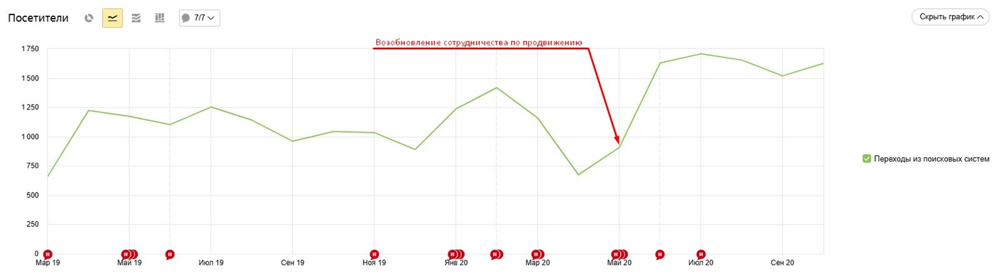
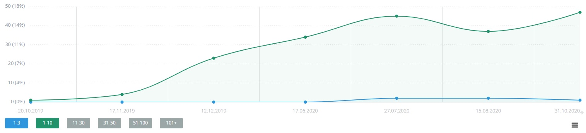
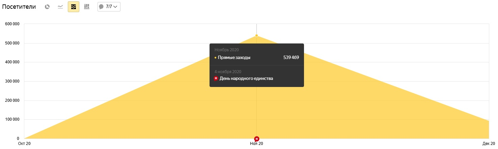
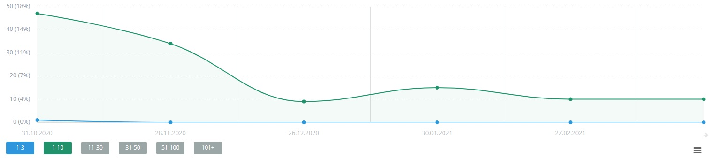
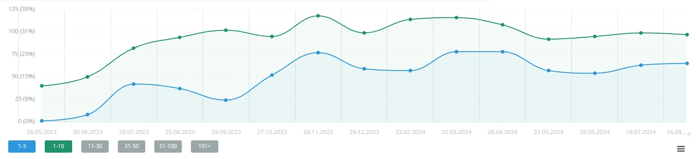
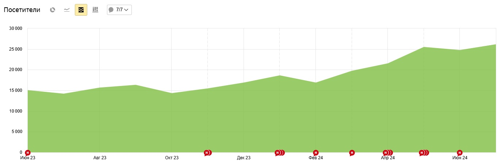

О проекте
Красота требует SEO: как мы продвигали сайт лаборатории профессионального окрашивания волос
Заказчик обратился к нам с вопросом по разработке сайта для салона красоты (лаборатории профессионального окрашивания волос). Сайт получился довольно эффектным и с отличным визуалом. Ознакомиться с кейсом можно по ссылке.
После релиза проекта в марте 2019 года, продвижением сайта занималось именитое агентство из Москвы. Через некоторое время, поскольку результаты были не впечатляющими, клиент решил обратиться за продвижением в наше digital агентство. Однако, и с нами сотрудничество было непродолжительным — чуть более трех месяцев. За это время мы внедрили много правок и сделали оптимизацию сайта в тех моментах, где ранее было не реализовано. Доработали детальные страницы услуг, добавили на сайт раздел для информационных статей, скорректировали мета-теги, и переписали все тексты услуг.
Ушел, чтобы вернуться
В поисках оптимизации издержек, проект был передан фрилансеру (тут мог бы быть кейс, почему не стоит работать с фрилансерами, но его не будет, поскольку мы за здоровую конкуренцию).
Спустя полгода клиент снова вернулся к нам с запросом на продвижение сайта. В этот раз, поскольку база была нами подготовлена еще в рамках предыдущего этапа сотрудничества, то результат удалось показать в кратчайшие сроки. Увеличение посещаемости стало очевидным уже через месяц:

Также заметна положительная динамика и по позициям сайта:

Внезапные сложности
Однако, в конкурентных нишах, в борьбе за топ, многие готовы использовать любые средства. Как только мы смогли закрепиться в топе по высокочастотным запросам, конкуренты решили прибегнуть к активным действиям: на сайт было запущено огромное количество ботов (более 50 тыс. в сутки). Около 540 тыс. имитаций посещения со 100% отказом в течение месяца.

Естественно это негативно сказалось на позициях. Ранее с подобной ситуацией мы не сталкивались, поэтому приходилось импровизировать и искать решение находясь под атакой ботов. Подключили сайт к сервису Cloudflare. Не хотелось создавать препятствия реальным пользователям, совершающим прямой заход, поэтому производилась тонкая настройка по подсетям, странам, юзерагентам и другим схожим параметрам, позволяющим идентифицировать ботов. В результате мы смогли свести количество негативного трафика к нулю (хотя попытки атак ботов продолжаются и на текущий момент — в 2024 году).
Если у вас есть подобная проблема на сайте — обращайтесь, и мы обязательно вам поможем!
| Заказать настройку Cloudflare и защиту сайта от ботов (услуга оказывается только в рамках работ по продвижению сайта) | Оформить заявку |
Как говорилось выше — действия конкурентов все же повлияли негативно на позиции сайта:

Наши дальнейшие действия были направлены на восстановление позиций и удержание их на ранее достигнутом уровне. Одновременно с этим происходили все новые и новые атаки, и каждый раз нам приходилось корректировать настройки, для того чтобы не пустить ботов на сайт. Ослабили напор конкуренты только спустя год…
Повышение удобства пользователей
После этого, мы начали думать, как же улучшить поведенческие факторы на сайте и улучшить пользовательское взаимодействие.
-
Было полностью переделано меню, делая его более удобным, и предоставляя доступ к большему количеству страниц.
-
Был проведен анализ поведения пользователей на сайте, и по его итогам, подготовлены рекомендации по смене размещения блоков на страницах.
-
Внедрены доработки по улучшению категорий и детальных страниц услуг.
-
Добавлены новые блоки на посадочные страницы, которые могут помочь пользователю с выбором услуги.
-
Скорректированы разделы специалистов и галерея фото.
-
Активно начали наполнять блок новым контентом и делать перелинковку на страницы услуг.
Все это позволило улучшить ситуацию и положительно сказалось на позициях сайта.

А также на увеличении количества пользователей:
